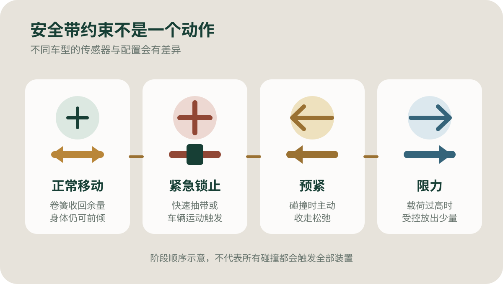
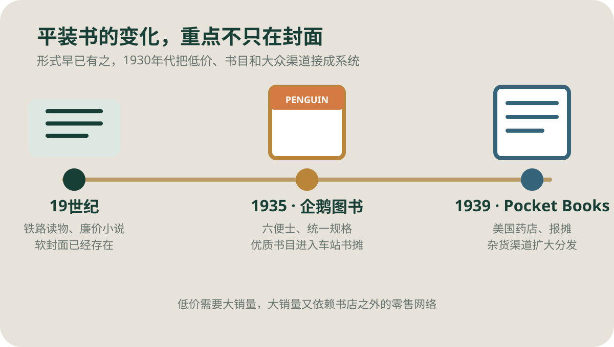
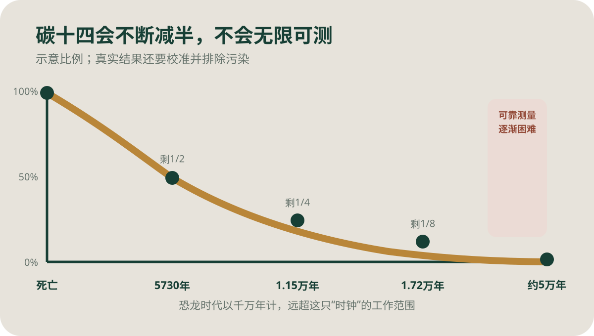

今日热点 01 · 中国 / 改革史
国务院原总理朱镕基逝世：评价一段改革史，先把成果与代价放在一起
美联社8月12日报道，国务院原总理朱镕基因病在北京逝世。他于1998年至2003年任总理，任内的国企改革、住房制度变化和加入世界贸易组织，至今仍在影响就业、住房与中国同世界经济的关系。
已确认的事实
他任总理五年，中国在2001年成为世贸组织第143个成员
美联社援引新华社消息称，朱镕基于8月12日在北京因病去世。报道依据他1928年10月23日的出生日期，将周岁写为97岁，并在文末更正早前的98岁表述。本期按可直接核对的出生日期与周岁口径处理，不把年龄写进标题。
朱镕基1998年至2003年任国务院总理。世界贸易组织档案显示，中国经过15年谈判，于2001年12月11日正式成为第143个成员。加入世贸不是一个人的单独决定，但朱镕基参与并推动了关键阶段的谈判与国内准备。
怎样理解改革
效率提高和大规模下岗同时发生，不能只保留其中一半
20世纪90年代后期，国有企业被要求减员、重组并提高盈利能力，银行体系和财政关系也经历整顿。企业效率和国家财政能力有所改善，代价则落在大量失去岗位的职工及其家庭身上。只说“闯关成功”，会抹掉承受调整的人。
1998年前后的住房制度改革推动城镇住房从单位分配转向市场购买。它扩大了私人住房持有，也把住房、土地与家庭资产更紧地连在一起。后来房价、土地财政和地方债务的演变不能全归因于一项改革，却也不能和这段制度起点完全切开。
这与你有什么关系
工作、买房和外贸企业的日常，都能找到那轮改革留下的结构
今天谈国企岗位、商品房、中央与地方财权，常会追溯到20世纪90年代。追溯并不等于寻找一个人来承担此后所有结果，而是分清哪些制度当时解决了什么问题，又把哪些成本推向了后来。
对普通读者更实用的判断方法，是把政策放回当年的约束：高通胀、国企亏损、银行坏账和入世谈判同时存在。再看实施后的受益者、承担者与后续修补，而不是只用“铁腕”或“市场化”两个标签下结论。
聊天时可以补一句
人物纪念最容易变成滤镜，制度后果却需要逐项核对
朱镕基以直率、强调问责的公开形象被许多人记住，但公共形象不能替代政策记录。入世日期可以由WTO档案核对，下岗规模、住房变化和财政效果则要分别查看统计口径与研究，不能从一句讲话反推全部历史。
因此，悼念与批评并不冲突。一个人可以在特定约束下推动艰难改革，改革也可以同时制造长期分配问题。把两句话都说出来，才接近历史，而不是在逝者身上寻找一个方便的神话。
评价改革，不只看它解决了什么，也看成本由谁承担、后来又怎样修补。
查看事实与延伸来源
美联社8月12日：朱镕基逝世及其任内改革背景
世界贸易组织：中国加入WTO的完整时间线
世界贸易组织：加入20周年回顾与结构性影响
今日热点 02 · 体育 / 商业
湖人队一年内第二次达成出售协议，125亿美元先别急着叫“到账”
美联社与Axios 8月12日报道，Josh Kushner和Bob Iger同Mark Walter达成收购洛杉矶湖人队的协议，估值或交易规模为125亿美元。协议仍需NBA理事会批准；新闻中的数字也不等于卖方当天收到等额现金。
发生了什么
买方公开确认协议，具体股权、资金结构仍未完整披露
美联社引述知情人士称，本次协议对应125亿美元；Axios也报道买方已确认收购安排。双方公开声明没有列出每一笔资金、债务或股权比例，因此当前能确认的是协议与估值，不能自行补成“全现金买下100%股权”。
湖人队去年才以100亿美元估值由Mark Walter取得控制权。本次若按125亿美元计算，一年内账面估值增加25%。这项比较说明市场愿意给顶级体育IP更高价格，却不等于球队一年创造了25%的经营利润。
为什么还没完成
联盟审批会检查买方资格、持股冲突和资金安排
NBA球队控制权转让需要理事会批准。Axios指出，Kushner现有迈阿密热火少数股权，若交易推进，需要处理持股冲突；参与投资的基金也受联盟关于单一机构持股比例的限制。
所以“达成协议”“获得联盟批准”和“完成交割”是三个节点。任何一个节点出现条件变化，交易时间或结构都可能调整。报道标题为了简短常写“出售”，正文仍应保留尚待批准的状态。
数字怎样读
估值、成交总价与到账现金不是同一个东西
体育交易常以整体估值传播，它可能包含不同股东出售的权益、承担的债务或后续安排。没有完整文件时，把125亿美元理解为这笔协议给整支球队贴出的价格标尺，比理解成某个人立刻付出的现金更稳妥。
纪录也要先限定范围。美联社将其称为美国职业体育球队纪录，并拿去年约60亿美元的凯尔特人交易比较。若把全球俱乐部、场馆、地产或商业网络一起混算，口径就会变化。
聊天时可以补一句
顶级球队卖的既是比赛收入，也是稀缺的控制权
门票和转播只是现金流的一部分。球队数量由联盟控制，洛杉矶市场、历史成绩、球迷规模和全球品牌又很难复制。买家为未来经营下注，也为“下一支可出售的同级球队不知道何时出现”支付稀缺溢价。
高估值并不保证球迷得到更便宜的票或更强的阵容。新老板如何处理竞技投入、商业开发和债务，仍要看交割后的实际决策。眼下最准确的说法只有一句：协议已达成，比赛和审批都还要继续。
体育交易新闻先分清协议、审批、交割，再分清估值与现金。
查看事实与延伸来源
美联社8月12日：湖人队125亿美元出售协议与纪录口径
Axios 8月12日：买方声明、持股冲突与联盟审批
今日热点 03 · 航天 / 辐射防护
绕月测试的26公斤防护背心有了新结果，但它没有经历真正的太阳风暴
8月12日发表的新研究用“阿耳忒弥斯一号”实测数据校准模型，再模拟1972年和1989年强太阳粒子事件。结果显示AstroRad背心或可把有效剂量分别降低约62%和40%；这是有实测约束的模拟，不是宇航员穿着背心经历风暴的临床证据。
实验怎么做
两具女性人体模型绕月飞行，只有Zohar穿着背心
2022年的“阿耳忒弥斯一号”没有载人。飞船带着Helga和Zohar两具女性人体模型，内部和表面布置大量辐射探测器；Zohar穿着约26公斤的AstroRad背心，Helga没有。背心重点覆盖乳房、肺、胃、骨髓和卵巢等辐射敏感部位。
NASA、德国航空航天中心和以色列航天局参与MARE实验。背心采用含氢较多的材料来削弱高能带电粒子，并不是把全身包在均匀厚重的铅层里。选择性覆盖能减轻重量，也意味着它不是适合整天活动的普通服装。
新结果是什么
研究先用范艾伦辐射带数据校准，再把历史风暴放进模型
飞行期间没有发生大型太阳粒子事件。研究团队用飞船穿越内范艾伦辐射带时的探测器读数检查模拟是否贴近实测，再模拟1972年8月和1989年10月两次历史强事件。模型给出的有效剂量降幅约为61.8%和40.2%。
这比完全脱离飞行数据的纸面推演更扎实，却仍不是“背心已在太阳风暴中实测”。粒子能谱、来向、宇航员姿势和飞船内部位置都会影响剂量。百分比应与具体事件、座位和模型条件一起阅读。
为什么需要它
地球磁场之外，太阳粒子事件可能在短时间内抬高剂量
近地轨道还有地球磁场提供部分保护，绕月和更远任务暴露得更多。银河宇宙线带来长期背景剂量，太阳粒子事件则可能突然增强。飞船可以设置“风暴掩体”，但宇航员未必能在所有工作地点立刻抵达。
可穿戴屏蔽的价值，是在预警后给敏感器官增加一层保护，或让人短时间离开掩体处理必要任务。它不能取代飞船结构、预报、剂量监测和任务时长管理；26公斤重量本身也会限制行动。
聊天时可以补一句
防护百分比很好懂，真正难的是把重量放在最值得保护的位置
辐射屏蔽不是越厚越好。发射每一公斤都要付出成本，太重的装备还会增加穿脱和移动负担。工程师要在粒子类型、器官敏感度、活动范围和飞船已有屏蔽之间分配材料。
研究团队正在继续减重，并考虑把水、食物等飞船已有物资转化为临时屏蔽。下一步的关键不是把62%写得更醒目，而是证明更轻方案在多种事件和真实任务动作下仍能提供可靠保护。
这项结果是“实测校准的风暴模拟”，不是“宇航员穿背心经历了太阳风暴”。
查看事实与延伸来源
美联社8月12日：新研究结果、重量与适用边界
国际宇航联合会：AstroRad飞行数据评估摘要与模型数字
NASA：阿耳忒弥斯一号与MARE实验说明
德国航空航天中心：MARE人体模型与探测器布局
涉猎 01 · 汽车安全 / 机械
安全带慢慢拉很顺，猛地一拽却锁住：卷收器在等一个异常信号
常见紧急锁止卷收器允许乘员正常移动，在织带被快速拉出或车辆突然减速、倾斜时锁住。碰撞发生后，预紧器再收走松弛，限力器则允许受控放出少量织带；三者不是同一个零件动作。

正常移动、紧急锁止、预紧和限力是不同阶段。原创示意；不同车型的触发方式和配置可能不同。
为什么会锁
有的感知织带速度，有的感知车辆运动，很多系统两种都用
卷收器里有卷簧负责收回织带，棘爪等机构负责在异常时阻止卷轴继续转。织带敏感式会响应快速抽出；车辆敏感式会响应急减速、明显倾斜或方向变化。慢慢前倾仍能活动，是为了让安全带在日常使用中不妨碍身体。
“猛拉一下能不能锁住”不是万能自检。有些卷收器主要看车辆运动，停车时拉动未必呈现同样反应；车辆停在坡面也可能更容易锁。判断故障应查车型手册和维修标准，不要靠反复猛拽得出结论。
碰撞时还有什么
先收紧，再受控放松，目的是把人留在合适位置并管理胸部载荷
碰撞传感器触发后，预紧器会很快收走织带松弛，让身体更早与约束系统共同减速。锁住卷轴只是防止继续放带，预紧则主动拉回一小段；它们的作用方向相近，触发机制不同。
当胸部受力上升，限力器可让卷轴受控转动或让部件变形，释放少量织带，降低峰值载荷。放带并不等于失效，而是与安全气囊配合管理减速度。发生碰撞或系统报警后，应由专业人员检查并按要求更换相关部件。
安全带约束不是“越紧越好”，而是按顺序锁止、预紧，再管理载荷。
查看事实与延伸来源
密歇根大学：紧急锁止卷收器与正常乘员活动
美国国家公路交通安全管理局：紧急锁止卷收器法规解释
NHTSA：预紧器与限力器的作用和碰撞数据
涉猎 02 · 出版史 / 日常文化
平装书不是1935年才出现，企鹅真正改变的是价格、规格和销售网络
软封面廉价读物在19世纪已经存在。1935年创办的企鹅图书把优质书目、六便士定价、统一版式和车站书摊等大众渠道组合起来；1939年的Pocket Books又在美国扩大类似模式。革命不只在封面材料，而在分发系统。

平装形式早已存在，1930年代的变化是标准化、低价和大规模非书店分发。原创时间线。
先纠正一个说法
企鹅没有发明软封面，它把“便宜”和“像样的书”绑在了一起
19世纪铁路读物、廉价小说和纸封本已让很多读者接触软封面。早期产品常被视为易耗品，书目和制作质量也参差不齐。把所有平装书的发明归给Allen Lane，会把此前一个世纪的出版实验抹掉。
企鹅图书1935年推出首批十本，统一采用醒目的色彩分类和六便士价格，书目包括海明威与阿加莎·克里斯蒂。不到十个月，印量达到100万册。它证明已有声望的作品也能用标准化低价版本大规模销售。
系统怎样改变阅读
书离开专门书店，进入车站、报摊和更频繁的日常购买
低单价必须靠更大销量支撑，关键因此不只是节省硬壳和装订成本，还要让书在更多地点出现。美国Pocket Books自1939年起把平装书送进药店、报摊和杂货渠道，出版从“等读者进书店”变成主动占据日常零售网络。
平装书降低了尝试一本书的价格，也改变了封面设计、库存周转和类型文学市场。它没有消灭精装本：精装仍适合收藏、礼赠和图书馆耐用需求。两种装帧对应不同购买场景，长期并存比简单替代更接近事实。
平装书的突破不是一张软封皮，而是低价、书目与大众分发形成同一套系统。
查看事实与延伸来源
企鹅图书官方时间线：1935年首批图书、六便士与百万印量
史密森尼相关出版史文章：美国大众平装书的零售网络
得克萨斯农工大学开放教材：精装、平装与大众市场版本
涉猎 03 · 考古 / 同位素
碳十四为什么能给木头测年，却测不了恐龙生活的年代
生物活着时不断交换碳，死亡后不再补充碳十四，剩余比例按约5730年的半衰期下降。方法通常适用于曾经活过、约5万年以内的材料；恐龙化石多有数千万年历史，碳十四早已少到无法可靠测量。

每过一个约5730年的半衰期，碳十四剩余比例减半；接近5万年时已很难与污染和测量背景区分。原创示意。
这只钟怎样启动
死亡停止补充，实验室测的是碳十四与稳定碳的比例
宇宙射线在高层大气中促成碳十四形成，它进入二氧化碳，再通过植物和食物链进入生物体。生物活着时持续交换碳；死亡后交换停止，碳十四继续衰变为氮，碳十二和碳十三则稳定存在。
实验室测出样品中碳十四与稳定碳的比例，再根据衰变规律估算生物停止交换碳的时间。因此，木炭、木材、纸、纺织物和部分保存良好的骨胶原可以测；石头、金属和陶器本体通常不能直接用这一方法。
为什么有上限
经过八九个半衰期，剩余信号太弱，少量新碳就足以扭曲结果
碳十四半衰期约5730年。约5万年后，原有碳十四只剩很小一部分，测量背景、土壤渗入、胶水或手触带来的现代碳都可能显著改变结果。牛津大学与史密森尼把常用范围大致放在几百年至5万年。
非鸟恐龙消失于约6600万年前，远超碳十四时钟的范围；许多化石的原始有机物也已被矿物替代。地质学家通常测定化石所在岩层附近的火山灰矿物，并结合地层先后关系。测到“年轻碳”时，首先要排查污染，而不是宣布恐龙活到了几万年前。
碳十四测的是生物停止交换碳的时间，而且只在剩余信号还能可靠分辨的范围内工作。
查看事实与延伸来源
牛津大学放射性碳加速器实验室：原理、材料与约5万年范围
史密森尼人类起源项目：5730年半衰期与适用边界
美国自然历史博物馆：恐龙年代如何由岩层与火山灰测定
“观天下书未遍，不得妄下雌黄。”
颜之推《颜氏家训·勉学》（约6世纪）
雌黄可用来涂改黄纸上的文字，颜之推借这个具体动作告诫读书人：没有广泛比勘，就别急着校改古书。它反对的不是判断，而是证据不足时的笃定。今天核对一条新闻也一样，先看原文、版本和上下文，再决定究竟是前人写错、转述走样，还是自己只看见了材料的一角。广读不是拖延，而是给改动设置最低证据门槛。
核对原文与语境
“科学最大的悲剧，是一个美丽的假说被一个丑陋的事实杀死。”
托马斯·亨利·赫胥黎《生物发生与自然发生》（1870） · 本刊译
赫胥黎谈的是自然发生说如何在实验面前失去位置。这里的“丑陋”不是事实真的难看，而是它不肯配合研究者已经爱上的解释。好假说需要大胆，继续相信它却需要条件：新证据到来时，能否让模型失败、修改甚至退出。科学的体面，不在于每次都猜中，而在于允许事实赢。研究者失去一个漂亮故事，知识却因此向前一步。
核对原文与语境
“首要之事，是把数据展示出来。”
爱德华·塔夫特《定量信息的视觉呈现》（1983） · 本刊译
塔夫特把这句话放在统计图形的基本原则里，针对的是装饰、边框和视觉把戏盖过数据本身。展示数据也不是把所有数字一股脑塞进图里；尺度、单位、基线和缺失值仍要交代。真正的克制，是让读者看见变化与例外，并有机会对作者的结论说“不”，而不是只看一张漂亮的证词。图形的诚实，最终要落在读者能否复核。
核对原文与语境
“我们极少、甚至从未在孤立中获得疗愈；疗愈是一种共融的行动。”
贝尔·胡克斯《一切关于爱：新视野》（2000） · 本刊译
胡克斯不是否定独处的价值。她写的是伤害与修复都发生在关系之中：有人倾听、承担责任、重新建立信任，个人才可能把破碎经验放回可生活的世界。把疗愈只理解成“自己想开”，会把支持系统和公共责任一并删掉。共同体也不是自动安全，它必须靠边界、照料和可检验的改变建立。陪伴若没有责任，也可能再次造成伤害。
核对原文与语境
“把全部真相说出，但要斜着说。”
艾米莉·狄金森《诗1263》（约1868） · 本刊译
狄金森把真相比作过亮的闪电：不是削弱它，而是让眼睛逐渐适应。所谓“斜着说”也不是含糊其辞或隐瞒关键事实，而是承认接受真相需要形式、节奏和距离。教育、报道与劝告都可能因此更有效。前提始终是“全部真相”；如果只剩技巧，没有完整性，斜线就会变成遮挡。好的转述改变入口，不偷换抵达的地方。
核对原文与语境